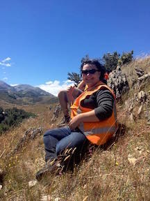
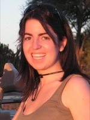
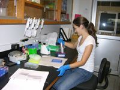
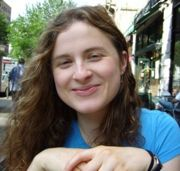
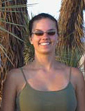
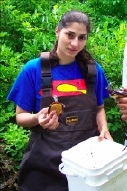

Over the years, several undergraduate students have worked in the Arachnology Lab supported by various internships. Most have gone on to graduate school and beyond. We acknowledge and appreciate their work. If you are interested in interning in the Arachnology Lab at the AMNH please visit the Research Experiences for Undergraduates Program
 |
Valentin Ehrernthal University of Hamburg, Germany 2019-2020
Valentin spent six months at the AMNH working on Southeast Asian scorpions. He generated images and data for a morphological matrix and performed extractions, PCRs and Sanger Sequencing. Additionally, he learned about the biogeography and phylogeny of these scorpions. |
 |
Diogo Casellato CUNY, Baruch College 2015, 2016, 2017, 2018, 2019 (Brazil Scientific Mobility Program) Diogo interned in the molecular lab, learning to extract, amplify, sequence, and edit DNA as part of a variety of scorpion phylogenetics projects.
|
 |
Elena Babicz Bridgewater State University 2019 Elena spent the summer at the AMNH as an REU intern under the supervision of Stephanie Loria and Pio Colmenares, focusing on Thelyphonids. She was tasked with generating molecular data and images of the specimens, and also learned about the morphology, biogeography and phylogeny of this order of arachnids. |
 |
Colby Sain University of Tennessee 2019 Colby came to the AMNH as an REU intern. She worked under the mentorship of Ricardo Botero-Trujillo and Stephanie Loria, primarily on Ricinulei, with a focus on the African genus, Ricinoides. She generated an extensive set of morphological images, and she also generated molecular data. At the University of Tennessee, she studies Geology with a focus on Paleontology. In the future, Colby hopes to do more work in the Arachnology Lab.. |
 |
Deborah Chin Fairleigh Dickinson University 2016, 2017, 2018 Deborah spent the summer doing extractions and PCRs on scorpions in the AMNH molecular lab. |
 |
Sasha Mendez Rutgers University 2018 Sasha spent the summer obtaining DNA extractions, PCRs and sequences from scorpion samples in the AMNH molecular lab. |
 |
Lam Ngo Sewanee: The University of the South 2018 Lam assisted with field work in Asia, surpervised by Stephanie Loria. |
 |
Massimiliano (Max) Roppo Sapienza University of Rome, Italy 2018 Max came to the AMNH and spent three months adquiring morphological data on some African scorpions. |
|  | Maggie Ruben Maggie spent the summer of 2016 studying cuticular fluorescence in scorpions and other chelicerates including horseshoe crabs, solifuges, opilionids, and extinct eurypterids. |
Michelle Yun
York College
2010
Michelle took part in an investigation of the phylogeny of the scorpion genus Parabuthus sequencing six different loci from samples collected all over southern Africa.
|  | Angela Holuba Barnard College 2008 Angela worked on a project investigating the phylogeny and evolutionary relationships of the scorpion family Buthidae. |
 |
Sylvia Johnson Barnard College 2008 (Collegiate Science and Technology Entry Program) Sylvia worked on a project investigating the phylogeny and evolutionary relationships of the scorpion family Diplocentridae.
|
|  | Gena Esposito University of Texas at Austin 2007 (NSF RevSys Grant) Gena generated DNA sequence data as part of an investigation of the phylogeny of the scorpion family Buthidae. |
|  | Sarah Schoenbrun Brown University 2007 (NSF Research Experiences for Undergraduates Internship) Sarah studied the medical important North American scorpion genus, Centruroides, using molecular data from previously unidentified specimens to clarify their phylogenetic placement. Sarah also investigated the relationship between venom genes of Centruroides and other medically important scorpions. |
 |
Steve Webb Muhlenberg College 2005 (NSF Research Experiences for Undergraduates Internship) Steve tested the phylogenetic placement and monophyly of the former scorpion family Microcharmidae, using morphological and molecular data. |
 |
Kanvaly B. Bamba Yale University 2004 (NSF Research Experiences for Undergraduates Internship) Kanvaly contributed to the first phylogeny for the Gondwana scorpion family Hormuridae, based on a simultaneous analysis six gene loci and morphology.
|
|  | Michelle McCoy North Carolina University 2004 (NSF Research Experiences for Undergraduates Internship) Michelle contributed to the first phylogeny for the Gondwana scorpion family Hormuridae, based on a simultaneous analysis six gene loci and morphology.
|
|  | Samara Maaliki City University of New York 2003 (Joint NSF Research Experiences for Undergraduates Internship and Undergraduate Mentoring in Evolutionary Biology Internship) Samara studied the morphology of the central Asian scorpion Pseudochactas ovchinnikovi and investigated its phylogenetic position with morphological and molecular data. |
Lauren Esposito
University of Texas, El Paso
2002
(NSF Research Experiences for Undergraduates Internship)
See Ph.D.s